Source image
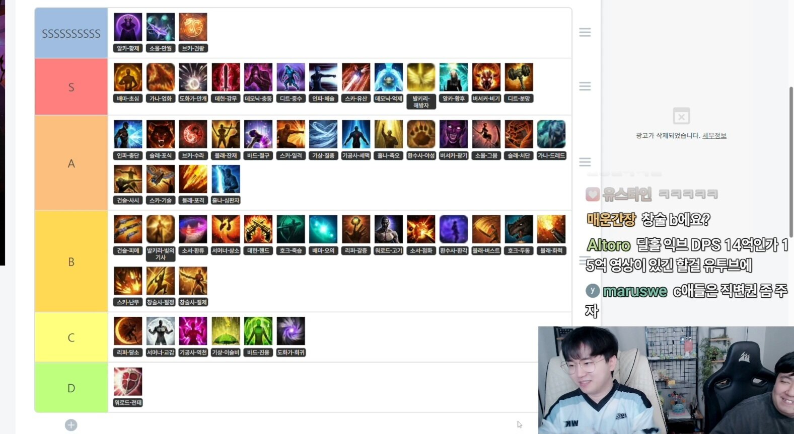
Captured mid-stream by Powdersnow (1577×863). Click for full resolution.
Tier breakdown (translated) — with in-game build icons
| SSSSSSSSSS |
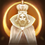 Arcanist Order of the Emperor 알카-황제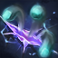 Souleater Full Moon Harvester 소울-만월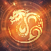 Breaker Brawl King Storm 브카-권왕 |
| S |
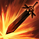 Wardancer First Intention 배마-초심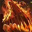 Guardian Knight Hellfire Successor 가나-업화 Artist Full Bloom 도화가-만개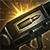 Deadeye Tactical Bullet 데헌-강무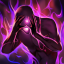 Shadowhunter Demonic Impulse 데모닉-충동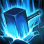 Destroyer Gravity Training 디트-중수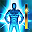 Scrapper Ultimate Skill: Taijutsu 인파-체술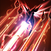 Machinist Evolutionary Legacy 스카-유산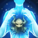 Shadowhunter Perfect Suppression 데모닉-억제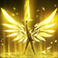 Valkyrie Liberator 발키리-해방자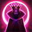 Arcanist Grace of the Empress 알카-황후 Berserker Berserker Technique 버서커-비기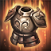 Destroyer Rage Hammer 디트-분망 |
| A |
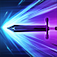 Scrapper Shock Training 인파-충단 Slayer Predator 슬레-포식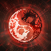 Breaker Asura’s Path 브카-수라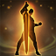 Deathblade Remaining Energy 블레-잔재 Bard Desperate Salvation 바드-절구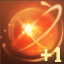 Striker Deathblow 스카-일격 Aeromancer Wind Fury 기상-질풍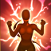 Soulfist Robust Spirit 기공사-세맥 Paladin Blessed Aura 홀나-축오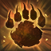 Wildsoul Ferality 환수사-아성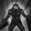 Berserker Mayhem 버서커-광기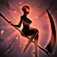 Souleater Night’s Edge 소울-그믐 Slayer Punisher 슬레-처단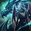 Guardian Knight Dreadful Roar 가나-드레드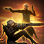 Gunslinger Time to Hunt 건슬-사시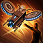 Machinist Arthetinean Skill 스카-기술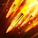 Artillerist Barrage Enhancement 블래-포격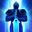 Paladin Judgment 홀나-심판자 |
| B |
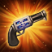 Gunslinger Peacemaker 건슬-피메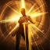 Valkyrie Shining Knight 발키리-빛의 기사 Sorceress Reflux 소서-환류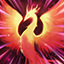 Summoner Master Summoner 서머너-상소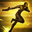 Deadeye Pistoleer 데헌-핸드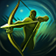 Sharpshooter Death Strike 호크-죽습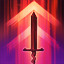 Wardancer Esoteric Skill Enhancement 배마-오의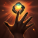 Reaper Hunger 리파-갈증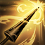 Gunlancer Lone Knight 워로드-고기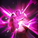 Sorceress Igniter 소서-점화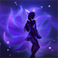 Wildsoul Phantom Beast Awakening 환수사-환각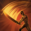 Deathblade Surge 블래-버스트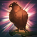 Sharpshooter Loyal Companion 호크-두동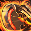 Artillerist Firepower Enhancement 블래-화력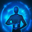 Striker Esoteric Flurry 스카-난무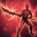 Glaivier Pinnacle 창술사-절정 Glaivier Control 창술사-절제 |
| C |
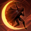 Reaper Lunar Voice 리파-달소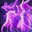 Summoner Communication Overflow 서머너-교감 Soulfist Energy Overflow 기공사-역천 Aeromancer Drizzle 기상-이슬비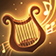 Bard True Courage 바드-진용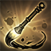 Artist Recurrence 도화가-회귀 |
| D |
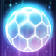 Gunlancer Combat Readiness 워로드-전태 |
KR class / build abbreviation decoder
| KR slang in tile | Class | Build (EN) |
|---|---|---|
| 알카 | Arcanist | (아르카나) |
| 버서커 | Berserker | (버서커) |
| 디트 | Destroyer | (디스트로이어) |
| 워로드 | Gunlancer | (워로드) |
| 홀나 | Paladin | (홀리나이트) |
| 슬레 | Slayer | (슬레이어) |
| 발키리 | Valkyrie | (발키리) |
| 가나 | Guardian Knight | (가디언나이트) |
| 배마 | Wardancer | (배틀마스터) |
| 인파 | Scrapper | (인파이터) |
| 기공사 | Soulfist | (기공사) |
| 창술사 | Glaivier | (창술사) |
| 스카 | Machinist or Striker (context) | 스카우터 / 스트라이커 — this OP uses 스카 ambiguously for both |
| 브카 | Breaker | (브레이커) |
| 호크 | Sharpshooter | (호크아이) |
| 데헌 | Deadeye | (데빌헌터) |
| 블래 | Artillerist or Deathblade (context) | 블래스터 / 블레이드 — this OP uses 블래 for both |
| 건슬 | Gunslinger | (건슬링어) |
| 환수사 | Wildsoul | (환수술사) |
| 바드 | Bard | (바드) |
| 서머너 | Summoner | (서머너) |
| 소서 | Sorceress | (소서리스) |
| 도화가 | Artist | (도화가) |
| 기상 | Aeromancer | (기상술사) |
| 블레 | Deathblade | (블레이드) |
| 데모닉 | Shadowhunter | (데모닉) |
| 리파 | Reaper | (리퍼) |
| 소울 | Souleater | (소울이터) |
| — Build abbreviations — | ||
| 황제 | Arcanist | Order of the Emperor (황제의 칙령) |
| 황후 | Arcanist | Grace of the Empress (황후의 은총) |
| 비기 | Berserker | Berserker Technique (광전사의 비기) |
| 광기 | Berserker | Mayhem (광기) |
| 분망 | Destroyer | Rage Hammer (분노의 망치) — OP’s contraction |
| 중수 | Destroyer | Gravity Training (중력 수련) |
| 고기 | Gunlancer | Lone Knight (고독한 기사) |
| 전태 | Gunlancer | Combat Readiness (전투 태세) |
| 심판자 | Paladin | Judgment (심판자) |
| 축오 | Paladin | Blessed Aura (축복의 오라) |
| 처단 | Slayer | Punisher (처단자) |
| 포식 | Slayer | Predator (포식자) |
| 빛의 기사 | Valkyrie | Shining Knight (빛의 기사) |
| 해방자 | Valkyrie | Liberator (해방자) |
| 업화 | Guardian Knight | Hellfire Successor (업화의 계승자) |
| 드레드 | Guardian Knight | Dreadful Roar (드레드 로어) |
| 초심 | Wardancer | First Intention (초심) |
| 오의 | Wardancer | Esoteric Skill Enhancement (오의 강화) |
| 체술 | Scrapper | Ultimate Skill: Taijutsu (극의: 체술) |
| 충단 | Scrapper | Shock Training (충격 단련) |
| 세맥 | Soulfist | Robust Spirit (세맥타통) |
| 역천 | Soulfist | Energy Overflow (역천지체) |
| 절정 | Glaivier | Pinnacle (절정) |
| 절제 | Glaivier | Control (절제) |
| 일격 | Striker | Deathblow (일격필살) |
| 난무 | Striker | Esoteric Flurry (오의난무) |
| 권왕 | Breaker | Brawl King Storm (권왕파천무) |
| 수라 | Breaker | Asura’s Path (수라의 길) |
| 죽습 | Sharpshooter | Death Strike (죽음의 습격) |
| 두동 | Sharpshooter | Loyal Companion (두 번째 동료) — OP contraction of 두 번째 동료 |
| 강무 | Deadeye | Tactical Bullet (전술 탄환) — pre-Ark-Passive 강화된 무기 carry-over slang |
| 핸드 | Deadeye | Pistoleer (핸드거너) |
| 포격 | Artillerist | Barrage Enhancement (포격 강화) |
| 화력 | Artillerist | Firepower Enhancement (화력 강화) |
| 기술 | Machinist | Arthetinean Skill (아르데타인의 기술) |
| 유산 | Machinist | Evolutionary Legacy (진화의 유산) |
| 피메 | Gunslinger | Peacemaker (피스메이커) |
| 사시 | Gunslinger | Time to Hunt (사냥의 시간) — here it’s 사+시 from 사냥의 시간 |
| 아성 | Wildsoul | Ferality (야성) — the tile reads “아성”, almost certainly a typo for 야성 |
| 환각 | Wildsoul | Phantom Beast Awakening (환수 각성) |
| 절구 | Bard | Desperate Salvation (절실한 구원) |
| 진용 | Bard | True Courage (진실된 용맹) |
| 상소 | Summoner | Master Summoner (상급 소환사) |
| 교감 | Summoner | Communication Overflow (넘치는 교감) |
| 점화 | Sorceress | Igniter (점화) |
| 환류 | Sorceress | Reflux (환류) |
| 만개 | Artist | Full Bloom (만개) |
| 회귀 | Artist | Recurrence (회귀) |
| 질풍 | Aeromancer | Wind Fury (질풍노도) |
| 이슬비 | Aeromancer | Drizzle (이슬비) |
| 잔재 | Deathblade | Remaining Energy (잔재된 기운) |
| 버스트 | Deathblade | Surge (버스트) — EN client shipped this as “Surge” |
| 충동 | Shadowhunter | Demonic Impulse (멈출 수 없는 충동) |
| 억제 | Shadowhunter | Perfect Suppression (완벽한 억제) |
| 갈증 | Reaper | Hunger (갈증) |
| 달소 | Reaper | Lunar Voice (달의 소리) |
| 만월 | Souleater | Full Moon Harvester (만월의 집행자) |
| 그믐 | Souleater | Night’s Edge (그믐의 경계) |
Translation notes
Three quirks of the OP’s shorthand
“스카” is ambiguous. The standard KR slang is 스카 = 스카우터 = Machinist. This OP also uses it as a contraction of 스트라이커 (Striker) — you can see 스카-유산 (Machinist Evolutionary Legacy in S) and 스카-일격 (Striker Deathblow in A) and 스카-난무 (Striker Esoteric Flurry in B) all sharing the same prefix. Match by build to disambiguate.
“블래” is ambiguous. Standard usage is 블래 = 블래스터 = Artillerist. This OP also wrote 블래 for Deathblade (block-icons 블래-버스트 in B = Deathblade Surge). The canonical Deathblade abbrev is 블레, not 블래; treat it as an OP typo and trust the build name (버스트 = Deathblade Surge; 포격/화력 = Artillerist).
“환수사-아성” is almost certainly “환수사-야성”. 야성 (“Ferality”) is one of Wildsoul’s two Ark Passive enlightenments; 아성 (“citadel”) doesn’t map to any build in the Loawa taxonomy. The icon in the tile is the Ferality paw-print emblem, so the row reads as Wildsoul Ferality.
“호크-두동” = Sharpshooter Loyal Companion. Not the more familiar 호크-환각 (also Loyal Companion). 두동 is a contraction of 두 번째 동료 (“Second Companion”, the build’s full KR name).
Pre-Ark-Passive carry-over. “강무” (Deadeye Tactical Bullet) is one of those slangs that stuck from the pre-Ark-Passive era — it abbreviates the old engraving 강화된 무기 (“Enhanced Weapon”) into 강+무. When Ark Passive shipped, the community renamed the build 전술 탄환 (Tactical Bullet), but 강무 is still in active KR use.